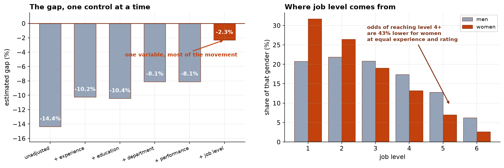

The Pay Gap Is Mostly a Promotion Gap
Women here earn 14 percent less than men. At the same grade the difference is small. The distance between those two sentences is the finding.
Recommendation
Report three numbers, not one. Across the company women earn 14.4 percent less than men. At the same grade, in the same department, with the same experience and rating, the difference is 2.3 percent. Between those two figures sits the reason: at equal experience, education, rating and department, women are 43 percent less likely to hold a senior grade. The problem to work on is promotion, not the salary bands.
What we found, in order
- The company-wide difference is 14.4 percent. This is what women earn against what men earn. It describes who holds which jobs, and it is the number a regulator or a journalist will ask for.
- Experience and department explain about six points of it. Women here have slightly less recorded experience and are more concentrated in Customer Support and less in Engineering. Both are real, and neither is the whole story.
- Performance ratings explain none of it. Men and women are rated the same. We report this because it is the first explanation anyone offers, and it does not hold here.
- Job level explains almost all of the rest. Accounting for grade takes the gap from 8.1 percent to 2.3. That single fact is the most important one in this review, for the reason below.
- Women are not reaching the senior grades. They are a third of level 1 and under three percent of level 6. At equal experience, education, rating and department, their odds of being at level 4 or above are 43 percent lower. This is not a rounding effect: the chance of seeing it if there were no difference is about two in a hundred billion.
Adjusting for job level is standard practice and it quietly answers a narrower question: are people paid fairly once they are in a grade? Mostly yes. It cannot see the question underneath: are people reaching those grades fairly? Mostly not. A report quoting only the 2.3 percent would be arithmetically correct and would leave our actual problem unmentioned.


One more thing the average hides
The 2.3 percent within-grade difference is not the same everywhere. It is 1.4 percent at the junior grades, 4.5 percent in the middle, and 5.7 percent at levels 5 and 6. Quoting a single figure would understate the position of our most senior women by more than half.
What we recommend
- Review promotion, not pay bands. The pay-setting process is working reasonably well within grades. The grade assignment process is where the evidence points, and it is a different set of people and a different process.
- Look at the senior grades specifically. Both problems are worse there: fewer women, and a larger within-grade difference among those who are.
- Treat this as a map, not a verdict. A statistical pattern across 3,569 people is not a finding about any individual's pay. It tells us where individual review is warranted.
- Publish all three numbers together. If we release only the adjusted figure and the unadjusted one surfaces later, the difference between them becomes the story.
What this review cannot tell you
It uses the data the HR system holds. Gender is a binary field, which excludes non-binary colleagues and anyone whose record is wrong. We have no measure of negotiation at hire, of who asked for a promotion, or of how objectives were set, and any of those could be part of the mechanism. We can say clearly where the gap is; we cannot say from this data alone why the promotion step works the way it does. That would need a look at the promotion decisions themselves.